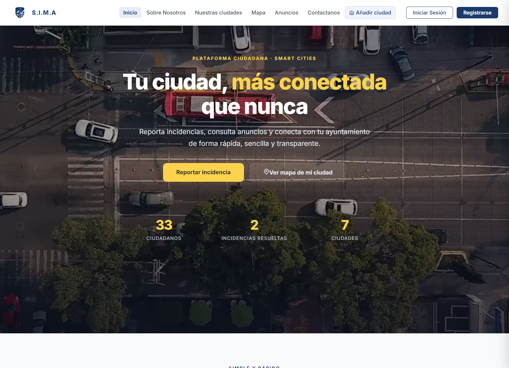
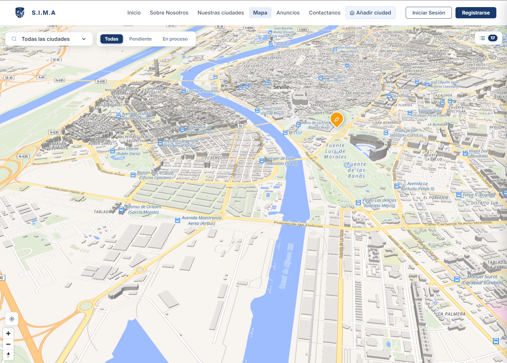
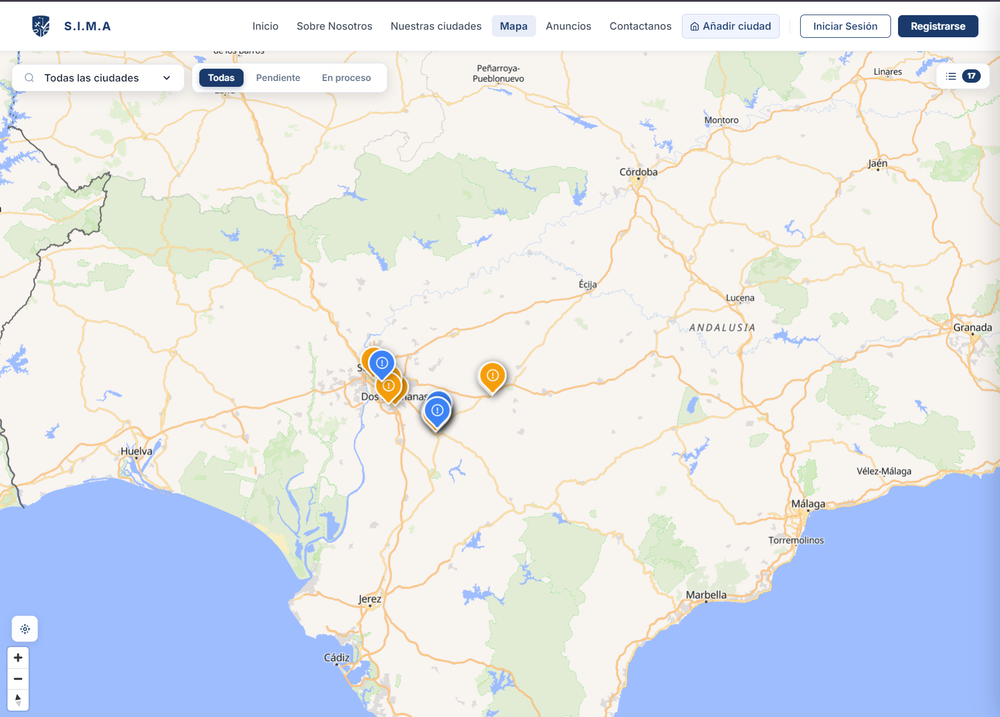

TFG
SIMA
Gestor de Incidencias Urbanas
Plataforma para reportar y seguir las incidencias de una ciudad sobre un mapa interactivo.
- Mapa con MapLibre para localizar incidencias y filtrarlas por estado.
- Acceso con JWT propio y Google OAuth2, con roles de técnico, operador y supervisor.
- Panel de administración para gestionar todo el ciclo de vida de cada incidencia.
JavaSpring BootReactMapLibreMariaDBUbuntu